Je fabrique Milestone, une petite app pour poser sa vie sur un fil. On écrit un souvenir en une phrase, « road trip en Espagne l’été 2003 », et il se range tout seul à sa date, à côté des grands événements de l’époque.
Elle marche, mais elle manque de caractère. Voici trois pistes de design, sur une vie inventée. Chacune s’essaie au doigt, idéalement sur téléphone.
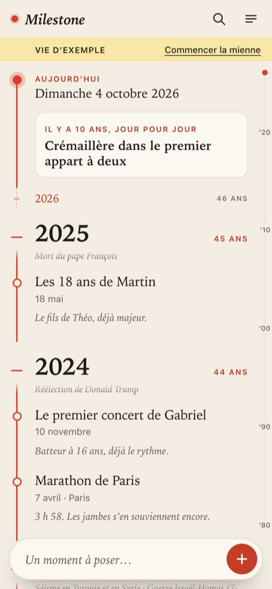
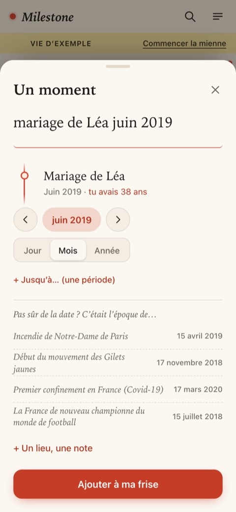
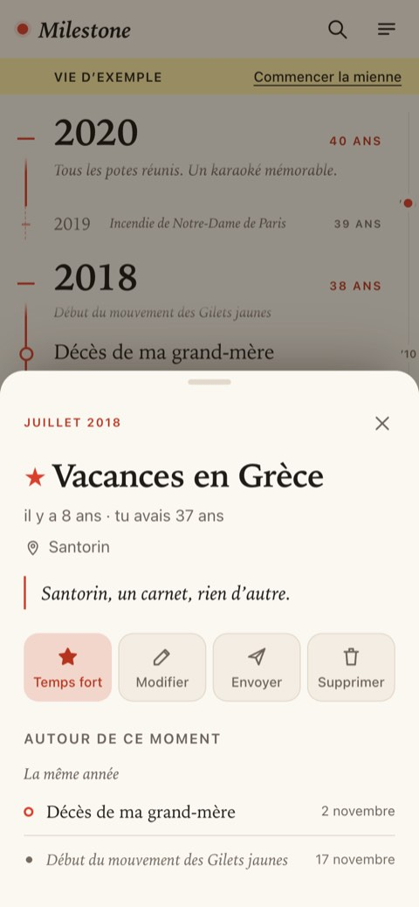
Ta vie vue d’avion
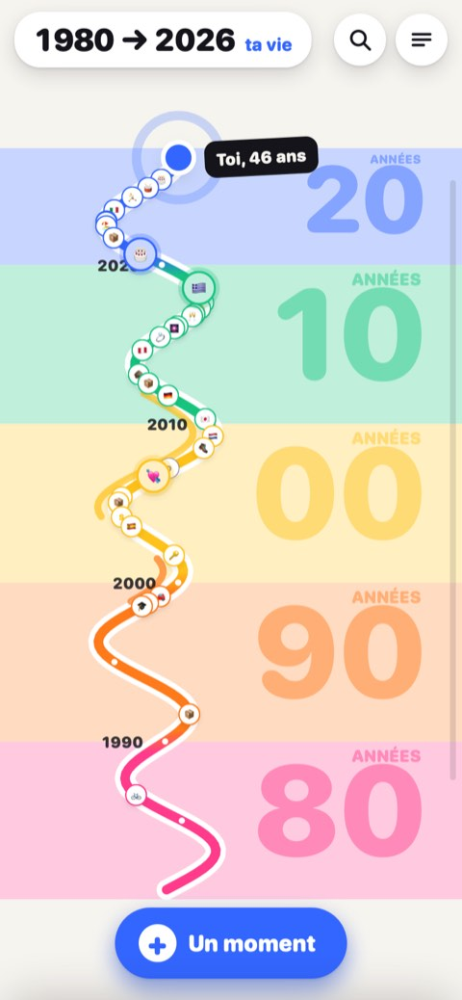
La frise devient une carte. On voit toute sa vie d’un coup d’œil, chaque décennie a sa couleur, et on zoome jusqu’à une année puis jusqu’à un souvenir.
À essayer : pincez la carte, ou faites glisser le pouce le long du bord droit. Touchez « Un moment » et écrivez une phrase avec une date, puis regardez où elle se pose.
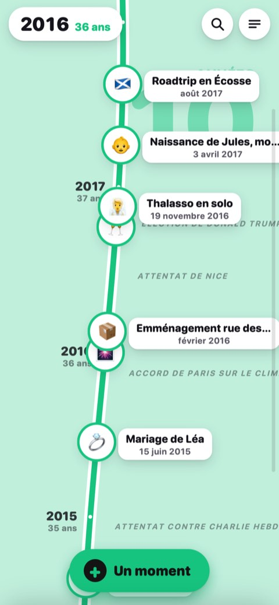
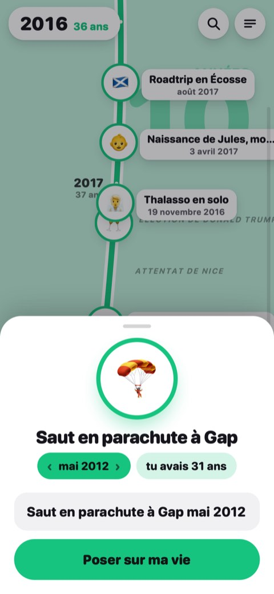
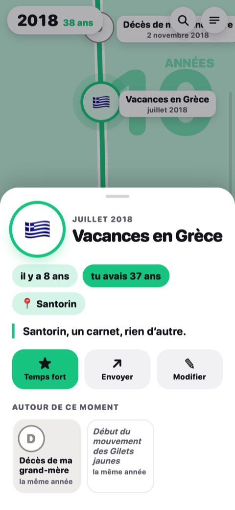
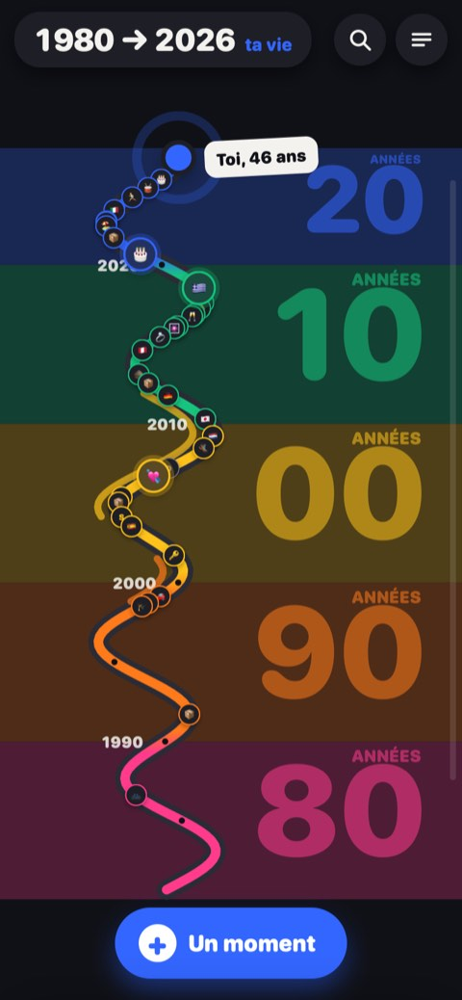
Ta vie en autocollants
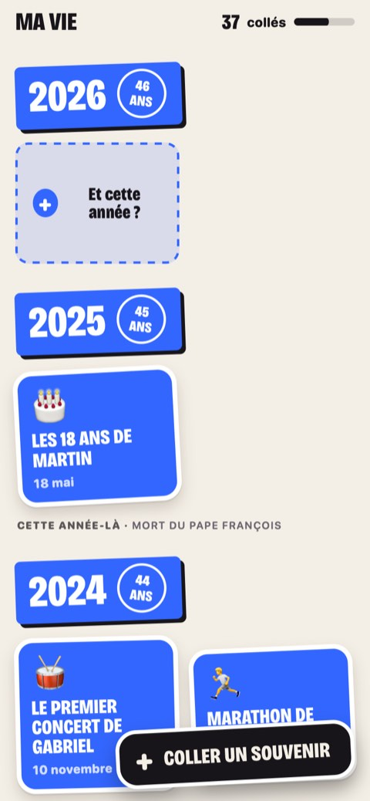
Chaque souvenir est un autocollant collé sur la page de son année. Les plus importants brillent, et les années encore vides attendent qu’on les remplisse.
À essayer : gardez le doigt sur un autocollant pour le décoller, touchez-le pour le retourner. Puis « Coller un souvenir ».
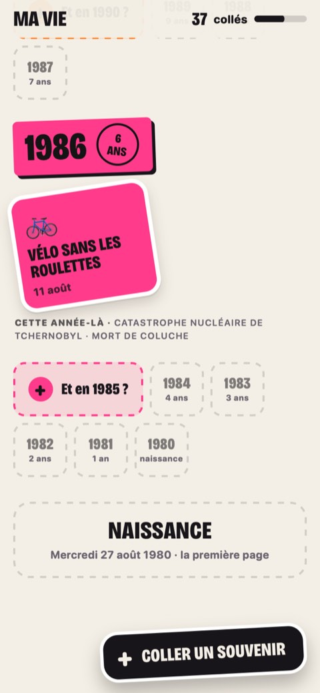
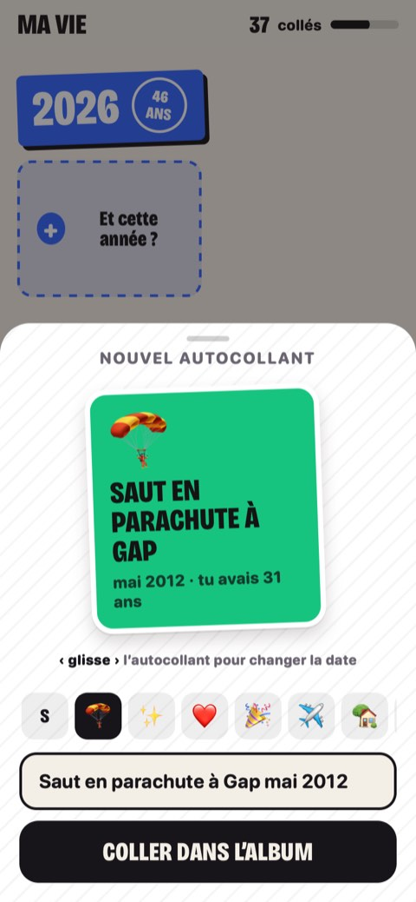
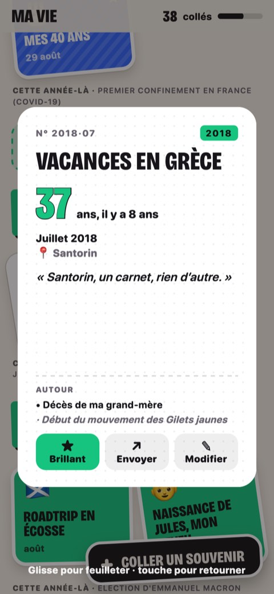
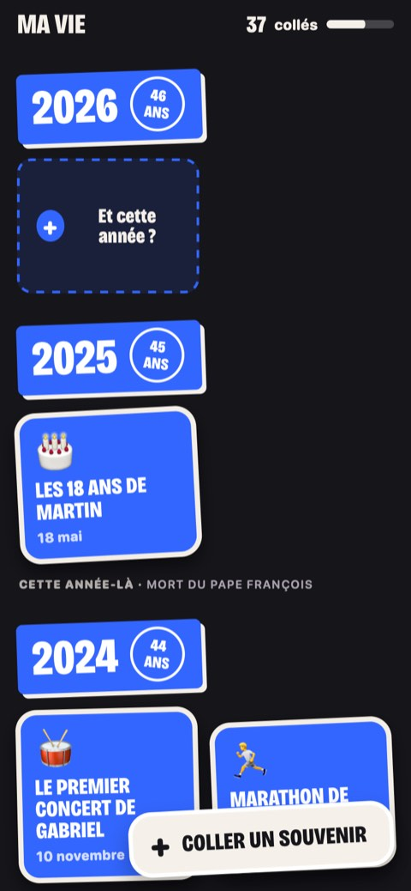
La couleur du temps
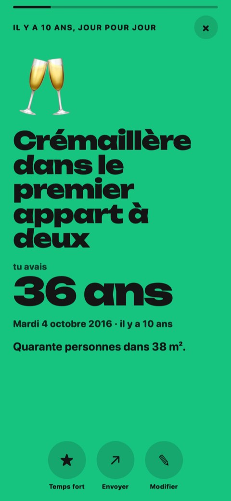
Tout l’écran prend la couleur de la décennie qu’on traverse. Les souvenirs sont accrochés à un fil qui ondule quand on fait défiler, et chacun s’ouvre en grand, comme une story.
À essayer : faites défiler vite, touchez un souvenir, puis le bouton + pour en accrocher un.
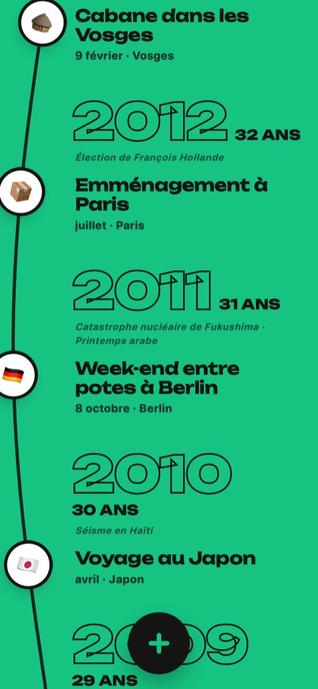
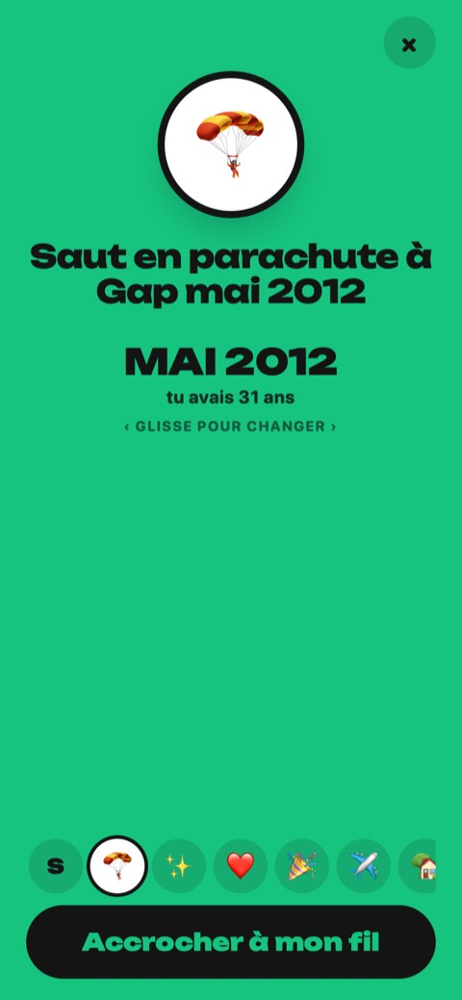
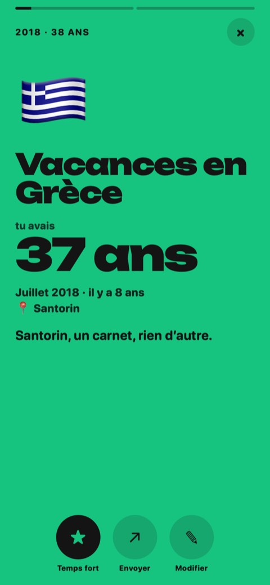
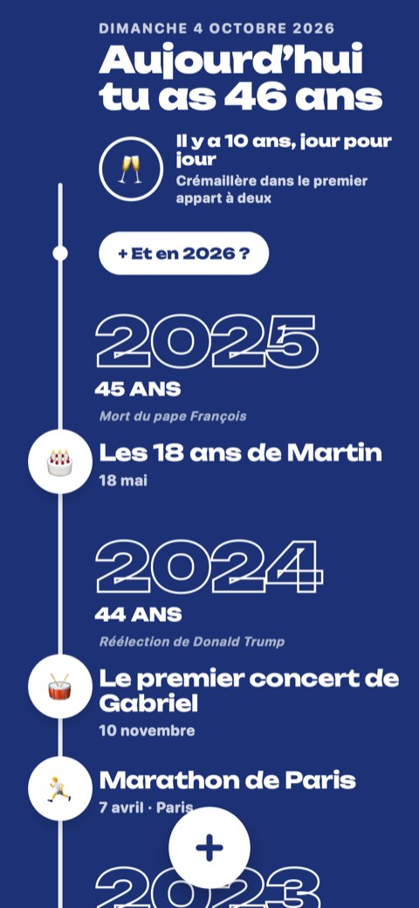
Répondez-moi par message, un chiffre suffit. Si un détail d’une autre piste vous a plu, ou si quelque chose vous a gêné, dites-le aussi.
Ce sont des maquettes : rien de ce que vous écrivez n’est gardé, et la vie affichée est inventée.